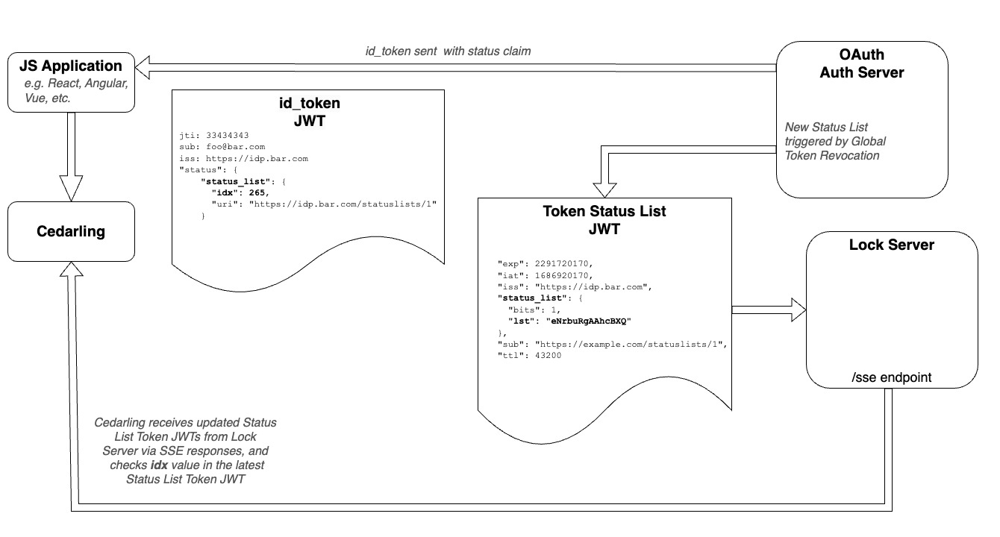

Cedarling JWT Validation#
Cedarling performs JWT (JSON Web Token) validation as part of its authorization workflow. This process ensures that only tokens from trusted issuers, with valid signatures and required claims, are used to make policy decisions. Optional revocation and trust-mode checks add further assurance and control.
Overview#
Learn more about each part of the validation process:
- Signature Validation: Verifies the token's origin using trusted issuer keys.
- Content Validation: Ensures required claims like
exporclient_idare present. - ID Token Trust Mode: Validates relationships between different token types.
- JWT Status Validation: Checks if a token has been explicitly revoked.
- Local JWKS: Using local key stores for testing.
Key Configuration Properties:
CEDARLING_JWT_SIG_VALIDATION: Controls JWT signature validationCEDARLING_JWT_STATUS_VALIDATION: Controls JWT revocation checksCEDARLING_ID_TOKEN_TRUST_MODE: Controls ID token trust validationCEDARLING_LOCAL_JWKS: Local key store for testing
See the complete bootstrap properties reference for all available configuration options.
JWT Signature Validation#
At startup, Cedarling fetches public keys from trusted identity providers (IDPs) defined in the policy store. These keys are used to validate the signature of incoming JWTs.
Running without trusted issuers
When CEDARLING_JWT_SIG_VALIDATION is enabled, if no trusted issuers (or local JWKS) are configured, Cedarling still starts and logs a WARN indicating that signed authorization is unavailable. Unsigned requests (authorize_unsigned) continue to work, but any attempt to validate signed JWTs fails with SignedAuthzUnavailable until at least one trusted issuer or JWKS is configured. When CEDARLING_JWT_SIG_VALIDATION is disabled, this warning does not appear as signature validation is not required.
Configuration#
To enable this feature, set the CEDARLING_JWT_SIG_VALIDATION bootstrap property to enabled. For development and testing purposes, you can set this property to disabled and submit an unsigned JWT, such as one generated from jwt.io.
On initialization, Cedarling will fetch the latest public keys from the issuers specified in the Policy Store and cache them. The system uses the JWT iss claim to select the appropriate keys for validation.
Example Policy Store#
Cedarling only validates tokens issued by trusted issuers listed in the policy store. Tokens from issuers not listed in the policy store will be ignored and will not be used for entity creation.
To allow an Access token like the one below to be used for authorization:
{
"iss": "https://test.issuer.com",
"aud": "abc123",
"exp": 1234567890
}
You MUST define a trusted issuer in your policy store with a matching openid_configuration_endpoint (same host as the token's iss claim):
{
// ... other fields have been omitted for brevity
"trusted_issuers": {
"my_trusted_issuer_id": {
"name": "my trusted issuer",
"description": "an IDP that i trust",
"openid_configuration_endpoint": "https://test.issuer.com/.well-known/openid-configuration",
"token_metadata": {
"access_token": {
"entity_type_name": "Jans::Access_token",
"token_id": "jti",
"workload_id": "client_id",
"required_claims": ["exp", "client_id"]
}
}
}
}
}
Additionally, only tokens explicitly named in the token_metadata section will be validated. All other tokens will be ignored.
Validation Requirements#
In summary, for a token to be validated by Cedarling, two conditions must be met:
- The
iss(Issuer) claim must match the host of anopenid_configuration_endpointin the policy store. - The token must be provided under a token name defined in the corresponding
token_metadata
// Example authorize call
cedarling.authorize({
"tokens": {
"access_token": "<access_token>", // will be validated and used for entity creation
"id_token": "<id_token>", // will be ignored unless defined in token_metadata
},
// ...
})
JWT Content Validation#
Cedarling also supports validating the contents of a JWT by enforcing the presence of required claims. These requirements are defined in the token_metadata section of the policy store.
Required Claims#
If timestamps are provided in the context, Cedarling always verifies:
exp(expiration)nbf(not before)
Custom Required Claims#
You can specify additional required claims in your token metadata configuration:
{
// ... other fields have been omitted for brevity
"trusted_issuers": {
"my_trusted_issuer_id": {
"name": "my trusted issuer",
"description": "an IDP that i trust",
"openid_configuration_endpoint": "https://test.issuer.com/.well-known/openid-configuration",
"token_metadata": {
"access_token": {
"entity_type_name": "Jans::Access_token",
"required_claims": ["exp", "client_id"]
}
}
}
}
}
The above configuration means that any access_token must contain both the exp and client_id claims, or it will be rejected. Additionally, registered claims like the exp will also be validated according to RFC 7519 standards.
ID Token Trust Mode#
Cedarling supports an optional strict trust mode for validating relationships between different token types—primarily ID tokens, Access tokens, and Userinfo tokens.
This behavior is controlled via the CEDARLING_ID_TOKEN_TRUST_MODE bootstrap property.
Implementation Status: Currently, only
strictandnevermodes are implemented. Additional modes (always,ifpresent) are defined in the enum but not yet supported in the validation logic.
strict Mode#
If CEDARLING_ID_TOKEN_TRUST_MODE is set to strict, Cedarling will enforce the following:
- The
id_token'saud(Audience) must match theaccess_token'sclient_id; - If a
userinfo_tokenis also provided: - Its
sub(Subject) must match that of theid_token - Its
audmust also match theaccess_token'sclient_id.
These additional checks add another layer of identity assurance across tokens.
never Mode#
Setting the validation level to never will not check for the conditions outlined in strict Mode.
JWT Status Validation#
Cedarling optionally supports JWT revocation checks by validating the status bit of a "Status Token" JWT, as proposed in the OAuth Status Lists draft.
This feature is toggled with the CEDARLING_JWT_STATUS_VALIDATION property.
ℹ️ Use Case
Enforcing token revocation can help mitigate account takeover risks by allowing for near-instant invalidation of compromised tokens.
JWT Validation Flow Diagram#
JWTs (JSON Web Tokens) contain authorization information that is used by the Cedarling to construct the Principal entities. In order to verify the authenticity of this information, the Cedarling can verify the integrity of the JWT by validating its signature and status(active, expired, or revoked). It does so by fetching the public keyset and the list of active tokens from the issuer of the JWT.

Local JWKS#
A local JWKS can be used by setting the CEDARLING_LOCAL_JWKS bootstrap property to a path to a local JSON file. When providing a local Json Web Key Store (JWKS), the file must follow the following schema:
{
"trusted_issuer_id": [ ... ],
"another_trusted_issuer_id": [ ... ]
}
- Where keys are
Trusted Issuer IDsassigned to each key store - and the values contains the JSON Web Keys as defined in RFC 7517.
- The
trusted_issuer_idis used to tag a JWKS with a unique identifier and enables using multiple key stores.